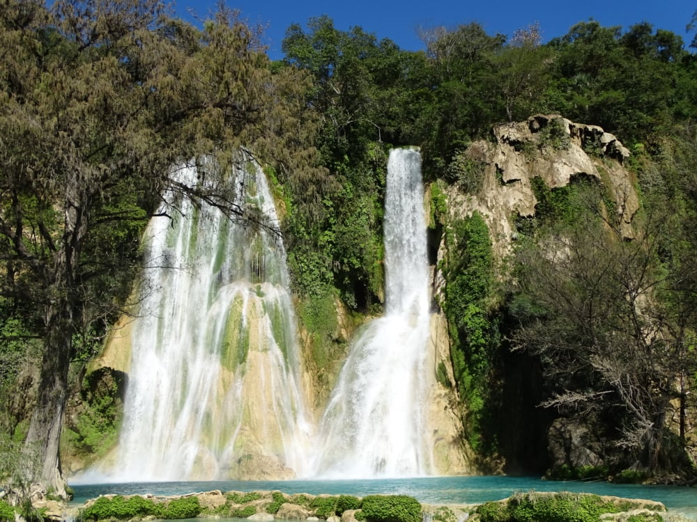
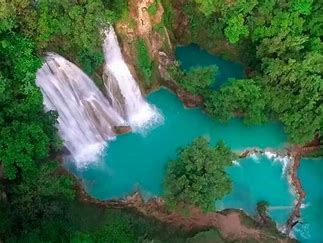
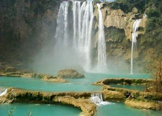

Una de las zonas más populares dentro de la Huasteca Potosina es El Naranjo, refugio de tres cascadas impresionantes: El Salto, Minas Viejas y El Meco, cada una se acompaña por pozas de azul turquesa y verde esmeralda.
El Naranjo es conocido por ser un hermoso poblado que se localiza en el estado de San Luis Potosí, al norte de la Huasteca Potosina. Es el lugar ideal para los turistas amantes de la aventura y el ecoturismo.